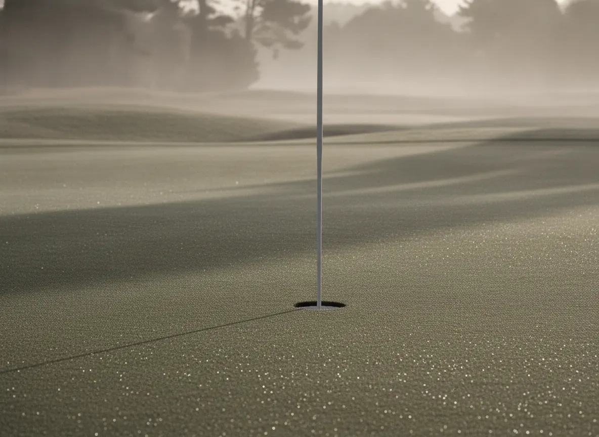

Handicap index
WHS · revised nightly12.4lowest in four seasons
down 0.3 this season
J. Ashworth№ 0212
The club keeps your record the way it keeps everything — accurately, privately, and without fuss.
12.4lowest in four seasons
down 0.3 this season

Open any round for the card itself.
Out 41, back 43. Two putts inside eight feet on 15 and 18 — the pro has thoughts.
A quiet 39 coming home. The new gapping between the 7-iron and the 9 is paying already.
Wind off the sea all day. Thirty-four putts is the whole story.
Birdie at the last in front of the terrace. Hart bought the drinks; the card keeps the proof.
Steady, unspectacular, four over on the par fives. That's the winter project named.
“Ball position has crept forward again — we reset it and the strike came back within a dozen swings. Before the Captain's Prize I want one more look at the 60-yard pitch. Bring the 54.”
— D. Whitcombe, Head Professional
Next lesson · Tue 19 · 4:00 pm
Records are kept from competition and attested cards only. The 268 had three witnesses and none of them will let you forget it.